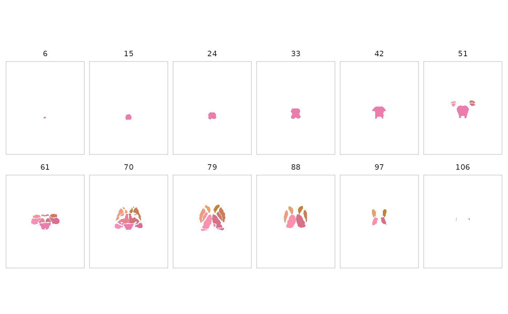
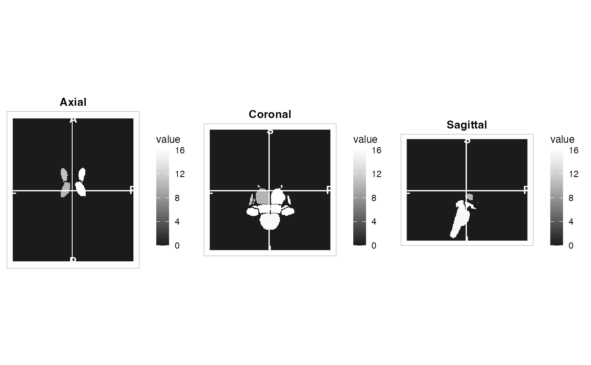
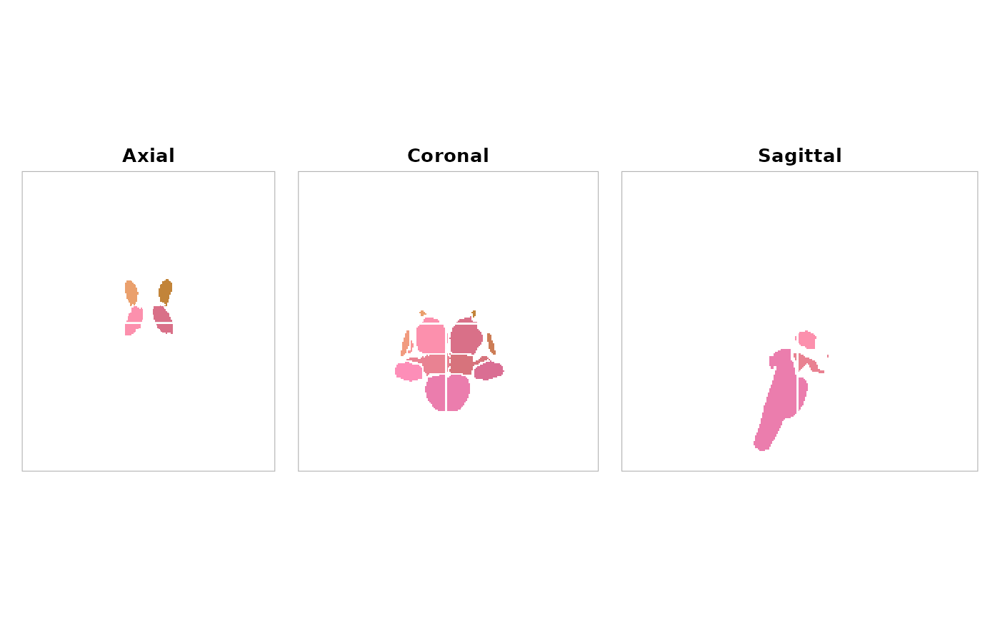
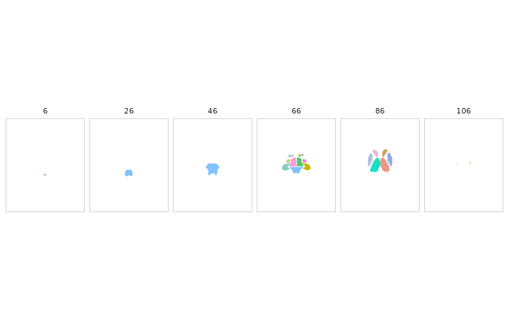

Visualise a Glasser atlas object. For surface atlases (glasser_surf),
renders via plot_brain(). For volumetric Glasser atlases,
falls back to the base plot.atlas() method.
Volumetric slice visualisation for any atlas object. By default renders a
multi-slice montage with each parcel coloured by the
atlas_roi_colors() system. An orthogonal three-plane view is
also available.
Usage
# S3 method for class 'atlas'
plot(
x,
y,
view = c("montage", "ortho"),
method = "rule_hcl",
colors = NULL,
nslices = 12L,
...
)
# S3 method for class 'glasser'
plot(
x,
y,
vals = NULL,
thresh = c(0, 0),
pos = FALSE,
palette = "cork",
lim = NULL,
...
)
# S3 method for class 'surfatlas'
plot(x, y, vals = NULL, views = c("lateral", "medial"), ...)Arguments
- x
An atlas object (atlas, glasser, schaefer, etc.)
- y
Ignored (required for S3 consistency)
- view
Character;
"montage"(default) for a multi-slice montage or"ortho"for three orthogonal planes.- method
Colour algorithm passed to
atlas_roi_colors(). One of"rule_hcl"(default),"network_harmony","maximin_view", or"embedding".- colors
Optional pre-computed colour specification: a tibble from
atlas_roi_colors(), or a named character vector of hex colours keyed by region ID.- nslices
Number of slices for montage view (default 12).
- ...
Additional arguments passed to
neuroim2::plot_montage()orneuroim2::plot_ortho().- vals
Numeric vector of values to visualize. If NULL (default), all regions will be assigned a value of 1, creating a uniform visualization
- thresh
Numeric vector of length 2 for thresholding values
- pos
Logical. If TRUE, uses raw values for thresholding
- palette
Character. Name of scico color palette
- lim
Numeric vector of length 2 for color scale limits. If NULL, will be set to range of vals
- views
Character vector of views to render for surface atlases. Any combination of
"lateral","medial","dorsal","ventral". Default:c("lateral", "medial").
Value
A ggplot2 or ggiraph object
For view = "montage", a ggplot2 object (invisibly).
For view = "ortho", a patchwork composite (if available) or a
list of three ggplot2 objects.
Details
plot.surfatlas renders a cortical surface projection via
plot_brain().
Examples
# \donttest{
atlas <- get_aseg_atlas()
plot(atlas)

plot(atlas, view = "ortho")


plot(atlas, method = "maximin_view", nslices = 6)

# }